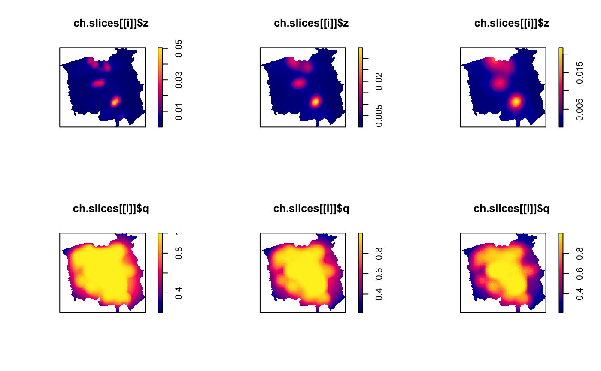

Takes slices of a multi-scale density/intensity estimate at desired global bandwidths
multiscale.slice(msob, h0, checkargs = TRUE)
| msob | An object of class |
|---|---|
| h0 | Desired global bandwidth(s); the density/intensity estimate
corresponding to which will be returned. A numeric vector. All values must be in the
available range provided by |
| checkargs | Logical value indicating whether to check validity of
|
If h0 is scalar, an object of class bivden with components
corresponding to the requested slice at h0. If h0 is a vector, a list of objects
of class bivden.
Davies & Baddeley (2018) demonstrate that once a multi-scale
density/intensity estimate has been computed, we may take slices parallel to
the spatial domain of the trivariate convolution to return the estimate at
any desired global bandwidth. This function is the implementation thereof
based on a multi-scale estimate resulting from a call to
multiscale.density.
The function returns an error if the
requested slices at h0 are not all within the available range of
pre-computed global bandwidth scalings as defined by the h0range
component of msob.
Because the contents of the msob argument, an object of class
msden, are returned based on a discretised set of global
bandwidth scalings, the function internally computes the desired surface as
a pixel-by-pixel linear interpolation using the two discretised global
bandwidth rescalings that bound each requested h0. (Thus, numeric
accuracy of the slices is improved with an increase to the dimz
argument of the preceding call to multiscale.density at the cost of
additional computing time.)
Davies, T.M. and Baddeley A. (2018), Fast computation of spatially adaptive kernel estimates, Statistics and Computing, 28(4), 937-956.
data(chorley) # Chorley-Ribble data (package 'spatstat') ch.multi <- multiscale.density(chorley,h0=1,h0fac=c(0.5,2))#> Initialising...Done. #> Discretising...Done. #> Forming kernel...Done. #> Taking FFT of kernel...Done. #> Discretising point locations...Done. #> FFT of point locations...Inverse FFT of smoothed point locations...Done. #> [ Point convolution: maximum imaginary part= 5.09e-14 ] #> FFT of window...Inverse FFT of smoothed window...Done. #> [ Window convolution: maximum imaginary part= 2.67e-17 ] #> Looking up edge correction weights... #> 1 2 3 4 5 6 7 8 9 10 11 12available.h0(ch.multi)#> [1] 0.5477611 1.8256134ch.slices <- multiscale.slice(ch.multi,h0=c(0.7,1.1,1.6)) par(mfcol=c(2,3)) # plot each density and edge-correction surface for(i in 1:3) { plot(ch.slices[[i]]$z); plot(ch.slices[[i]]$q) }